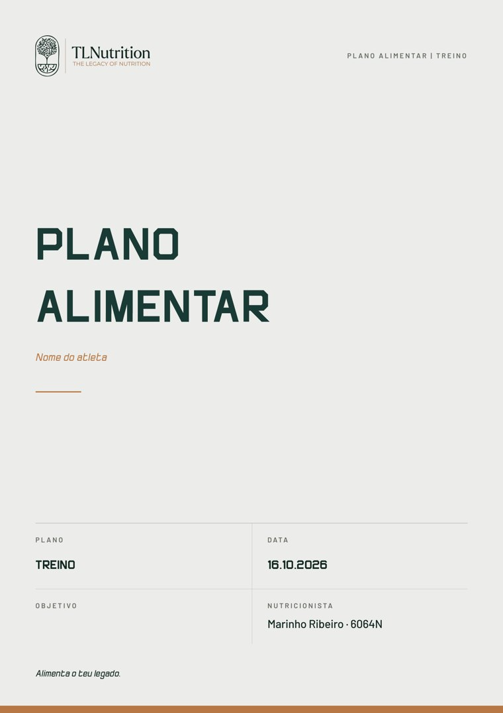
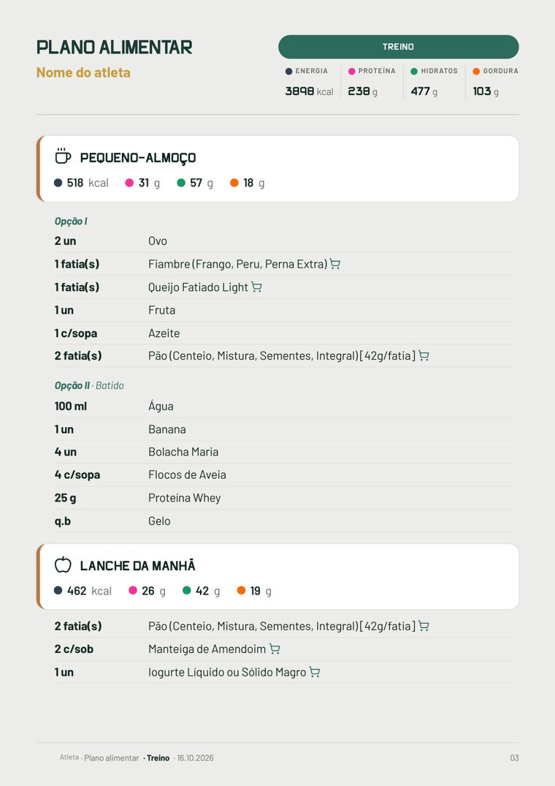
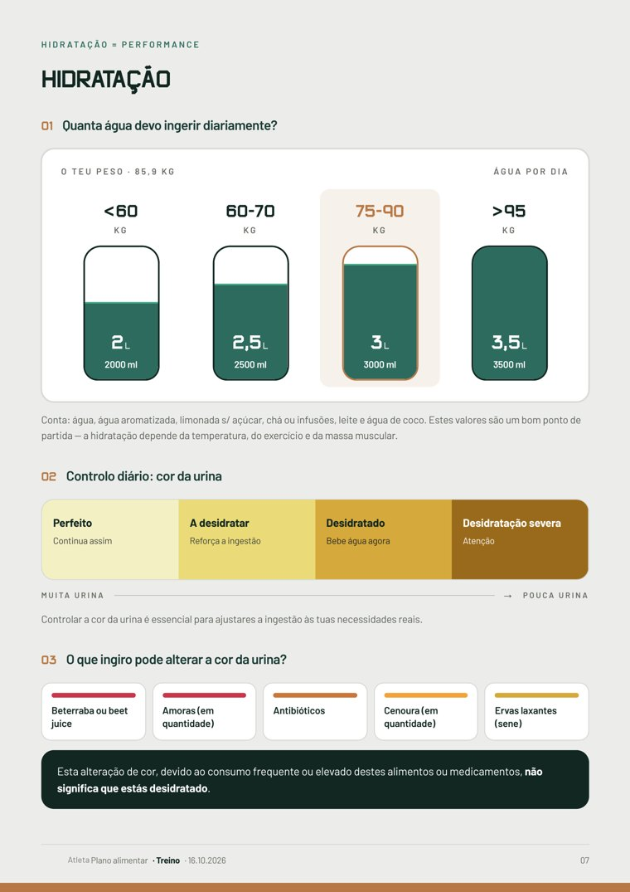
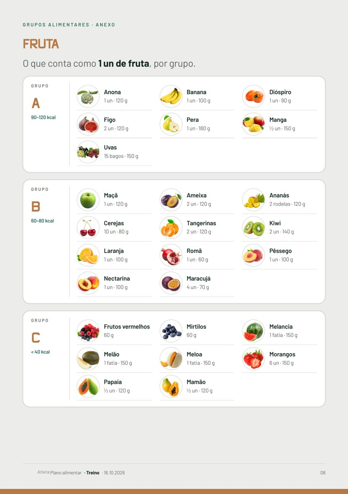

Plano alimentar
- Adaptado aos teus objetivos
- Ajustado aos teus gostos e preferências alimentares
- Pensado para melhorar os teus hábitos alimentares e o teu desempenho desportivo
- Adequado à realidade da tua família e à tua rotina diária



